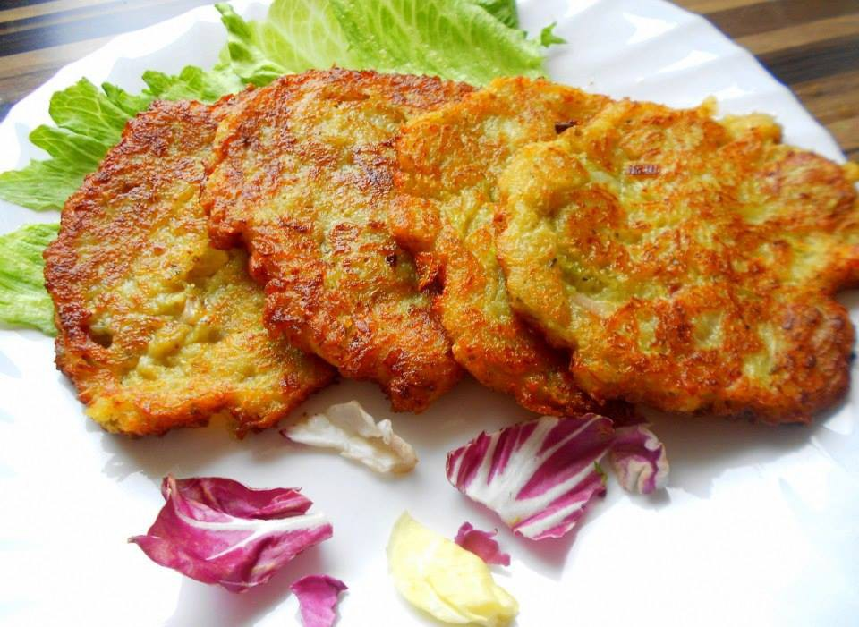

Homepage
Czech Cuisine
Bramboracky (Czech Savory Potato Pancakes)
Bramboracky (bram-bor-atch-key) are traditional pan-fried potato pancakes best accompanied by beer. This is a recipe that my Czech boyfriend and I have fun with often. Potato pancakes are commonly associated with traditional Czech, Ukrainian, Yiddish, German, Hungarian and Polish cuisines, although other cuisines (including those of India and Korea) also have similar potato pancakes.

- Servings: 3
- Yield: 6 large pancakes
- Prep: 30 mins
- Cook: 30 mins
- Total: 1 hr
Ingredients
- 4 large potatoes
- 3 cloves garlic, crushed
- salt and black pepper to taste
- s pinch dried marjoram (Optional)
- 2 teaspoons caraway seeds (Optional)
- 2 eggs
- 1 tablespoon
- 3 tablespoons all-purpose flour
- oil for frying
Directions
- Peel and coarsely grate the potatoes, squeezing out as much liquid as you can. Transfer the shredded potatoes to a mixing bowl. Stir in the crushed garlic, salt, pepper, marjoram, and caraway seeds.
- Beat the eggs with the milk. Add the egg mixture to the potatoes and stir well to combine. Gradually mix in the flour to form a thick but still pourable batter.
- Heat the oil in a skillet over medium-high heat; the oil should be about 1/4-inch deep. Spoon about 1/4 cup of batter into the hot oil, flattening it slightly. Fry the pancake until golden brown, about 3 minutes on each side. Drain on paper towels. Taste the first pancake and adjust the seasoning if necessary; repeat with remaining batter.
Cook's Note
You can add ham, bacon, or cheese to the pancakes before frying them, if desired. Substitute oregano for the marjoram and cumin seed for the caraway if you prefer. Enjoy them plain, with beer, topped with cheese, or with ketchup or mustard.
Nutrition Facts
Calories: 527
- Protein 15.1g;
- Carbs 94.3g;
- Fat 11.1g;
Check also this:
Roast Pork